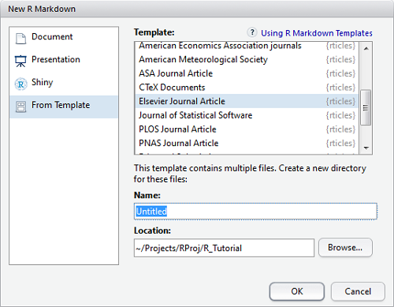
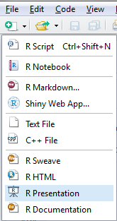

2017-06-22 20:39:01
目录
knitr基础
knitr包

主要特点
- knitr是rmarkdown实现动态报告的“透明引擎”
- 完全承袭前述rmarkdown的文档结构
- 包括YAML头和文档体（由文本块和代码块穿插构成）
- 文本块
- 支持markdown或LaTeX语法
- 可内嵌行内代码(Inline code)
- 代码块(code chunk)
- 支持全局参数配置
- 支持在每个代码块进行局部参数配置
- 体现R作为胶水语言的优越性，支持多种程序语言作为分析引擎
局部配置
```{r, <选项1>=..., <选项2>=..., ....}<代码块>```
支持12类选项:
代码求解: eval: (TRUE; 逻辑型)
eval=TRUE:
summary(cars)
## speed dist ## Min. : 4.0 Min. : 2.00 ## 1st Qu.:12.0 1st Qu.: 26.00 ## Median :15.0 Median : 36.00 ## Mean :15.4 Mean : 42.98 ## 3rd Qu.:19.0 3rd Qu.: 56.00 ## Max. :25.0 Max. :120.00
eval=FALSE:
summary(cars)
文本结果(1)
echo: (TRUE; 逻辑型或数值型) 是否打印源代码，或从第几行开始打印源代码results: ('markup'; 文本型) 取值包括- 'markup': 装裱特定输出文本(如LaTeX)
- 'asis': 输出原始格式
- 'hold': 运行完整个代码块后才输出
- 'hide': 隐藏输出
collapse: (FALSE; 逻辑型，仅限markdown结果) 是否把代码和结果输出到同一个文本块
文本结果(2)
warning: (TRUE; 逻辑型) 是否输出警告信息error: (TRUE; 逻辑型) 是否输出错误信息message: (TRUE; 逻辑型) 是否输出提示信息split: (FALSE; 逻辑型) 是否将输出结果分割到不同文件，仅限.Rnw, .Rtex, 和 .Rhtmlinclude: (TRUE; 逻辑型) 结果是否输出到结果文档strip.white: (TRUE; 逻辑型) 是否移除源代码块首尾空行class.output: (NULL; 文本型) 添加可以和css联用的class类型，对于HTML较实用
代码修饰
tidy: (FALSE; 逻辑型) 是否使用formatR::tidy_source()整理代码tidy.opts: (NULL; list)tidy.source()列表参数，如tidy.opts=list(blank=FALSE,width.cutoff=60)
prompt: (FALSE; 逻辑型) 是否加提示符comment: ('##'; 文本型) 输出源代码时，行前添加的前缀符highlight: (TRUE; 逻辑型) 是否高亮显示代码size: ('normalsize'; 文本型) 默认LaTeX输出的字号background: ('#F7F7F7'; 文本型或数值型) LaTeX输出的代码块背景色class.source: (NULL; 文本型) 添加可以和css联用的class类型，对于HTML较实用
缓存(1)
cache: (FALSE; 逻辑型) 是否缓存代码块结果，如设定缓存，仅当结果变化时才重新求解cache.path: ('cache/'; 文本型) 缓存文件的前缀名(默认存在工作目录下的cache文件夹内)cache.vars: (NULL) 变量名向量，规定哪些变量存入缓存数据库。NULL时，所有变量都存cache.globals: (NULL) 不是由当前代码块产生的变量名向量cache.lazy: (TRUE)lazyLoad()还是直接load()对象cache.comments: (NULL) 如设为FALSE，修改代码块内的注释不会令缓存失效cache.rebuild: (FALSE`) 如设为TRUE，强制重建该代码块的缓存
缓存(2)
dependson: (NULL; 文本型或数值型) 代码块标题向量，指定本代码块依赖于哪些其他代码块- 如
dependson为数值向量，则表示代码块序号。dependson=c(-1, -2)表示前两个代码块
- 如
autodep: (FALSE; 逻辑型) 是否自动找出依赖代码块
作图(1)
fig.path: ('figure/'; 文本型) 作图文件名前缀，可以是一个路径fig.keep: ('high'; 文本型) 代码块内的图如何保留，有5种选择:- 'high': 只保留高水平图(低水平改动被并入);
- 'none': 都不保留;
- 'all': 均保留(低水平改动产生新图)
- 'first': 只保留第一幅图
- 'last': 只保留最后一幅图
- 如设为数值型向量，则依此序号保留低水平图
作图(2)
fig.show: ('asis'; 文本型) 如何显示/安排这些图，有4种选择:- 'asis': 显示效果和在R命令行运行结果一样;
- 'hold': 直到运行完该代码块才出图;
- 'animate': 如该代码块产出多图，则将所有图整合成动画;
- 'hide': 产生图，但不显示到输出文档
dev: (LaTeX输出为'pdf', HTML/markdown输出为'png'; 文本型) 指定作图设备，包括R基础作图设备及Cairo、cairoDevice、tikzDevice包中的设备dev.args: (NULL) 传递给作图设备的参数，如dev.args=list(bg='yellow',pointsize=10)fig.ext: (NULL; 文本型) 图形输出文件扩展名
作图(3)
dpi: (72; 数值型) 位图设备分辨率DPI，(dpi * inches = pixels)fig.width,fig.height: (均为7; 数值型) 图宽和图高，单位为英寸fig.asp: (NULL; 数值型) 图形高宽比，一旦锁定，图高自动适配out.width,out.height: (NULL; 文本型) 最终输出文件中的图宽及图高，单位可多样out.extra: (NULL; 文本型) 图形的额外选项，如LaTeX中out.extra='angle=90'会将图翻转90度fig.retina: (1; 数值型) 仅用于HTML输出，对于视网膜屏，该代码块的dpi会被改为dpi * fig.retina，out.width改为fig.width * dpi / fig.retinaresize.width,resize.height: (NULL; 文本型) LaTeX中的用到的的宽和高fig.align: ('default'; 文本型) 输出文档中图的对齐方式 (可以是left, right或center)
作图(4)
fig.env: ('figure') 作图的LaTeX环境， 如设fig.env='marginfigure'得到\begin{marginfigure}fig.cap: (NULL; 文本型) 在LaTeX中，作图环境所用的图标题fig.scap: (NULL; 文本型) 短标题fig.lp: ('fig:'; 文本型) 图标题前缀，用于\label{}fig.pos: (''; 文本型) 图的位置，用于\begin{figure}[fig.pos]fig.subcap: (NULL) 子图的标题fig.process: (NULL) 用于后处理图文件的函数fig.showtext: (NULL) 如TRUE，作图前调用showtext::showtext.begin()external: (TRUE; 逻辑型) 是否外部化tikz设备 (将tikz设备预编译为PDF)sanitize: (FALSE; 文本型) 是否清理tikz设备 (转义特殊的LaTeX字符)
动画
interval: (1; 数值型) 动画框之间暂停的秒数aniopts: ('controls,loop') 动画的额外选项ffmpeg.bitrate(1M; 文本型) 传递给FFmpeg的-b:v参数，控制FFmpeg创建的WebM视频质量ffmpeg.format(webm; 文本型) FFmpeg视频格式，即视频文件扩展名
代码块、子文档
代码块
code: (NULL; 文本型) 如提供，则覆写当前代码块的代码ref.label: (NULL; 文本型) 代码块标题构成的文本向量，当前代码块将从这些代码块继承代码
子文档
child: (NULL; 文本型) 子文档文件名构成的文本向量，如指定，则引入这些文档，运行并将结果插入主文档
语言引擎
engine: ('R'; 文本型) 当前代码块的程序语言名称，目前可用'R'、'python'、'awk'/'gawk'，对象knit_engines可用于设置其他语言的引擎engine.path(NULL; 文本型): 引擎可执行程序的路径，该选项允许你使用系统中其他版本的可执行程序engine.path也可以是一个路径列表，为多个引擎设定多个路径，如
knitr::opts_chunk$set(engine.path = list( python = '~/anaconda/bin//python', ruby = '/usr/local/bin/ruby' ))
其他模板、提取源代码、其他选项
其他模板
opts.label: (NULL; 文本型) the label of options set inopts_template设定的选项标签，可用来保存一些常用的代码块选项
提取源代码
purl: (TRUE; 逻辑型) 运行purl()从源文档提取源代码时，纳入还是排除代码块
其他选项
R.options: (NULL) 代码块的本地R选项，它们是临时性的options()
全局选项
可通过opts_knit修改，如
opts_knit$set(progress = TRUE, verbose = TRUE)
- 在rmarkdown模板中，首个代码块标签为
rsetup，其中就包括了几个常用的全局选项 - 建议保持该结构，将文档培植信息、全局选项都写到首个代码块中
- 全局选项作用于文档内所有代码块
- 代码块选项比全局选项优先级更高，会覆写该代码块的设定
- 一共有24个全局选项
animation.fun: (hook_ffmpeg_html) 在HTML输出中创建动画的钩子函数，默认用FFmpeg将图片转为MP4视频aliases: (NULL) 命名的文本向量，指定代码块选项的别称，如c(h = 'fig.height',w = 'fig.width')将fig.height简称为h，fig.width简称为w，懒人必备base.dir: (NULL) 生成图形的绝对路径base.url: (NULL) HTML页面的基础URLchild.path: ('') 子文档的搜索路径，默认从父文档所在路径开始找concordance: (FALSE) 是否产生一个同步文件匹配输出行号与输入行号eval.after: (fig.cap) 选项名组成的文本向量，被指定的选项将在代码块求解之后再求解 (如指定eval.after='fig.cap'，则将在求解完代码块，得到x的取值后，再求解fig.cap=paste('p-value is',t.test(x)$p.value)global.par: (FALSE) 如TRUE，前个代码块的par()选项会被应用到下个代码块header: 当文档开始前，被插入到输出文档的文字 (如LaTeX中\documentclass{article}之后，或HTML中<head>之后)
latex.options.color,latex.options.graphicx(NULL): 分别是LaTeX包color和graphicx的选项out.format: (NULL) 可以是'latex', 'sweave', 'html', 'markdown'和'jekyll'progress: (TRUE) 运行knitr时是否显示进度条root.dir: (NULL) 求解代码块时的根目录，如NULL，则为该文档所在目录self.contained: (TRUE) 输出文档是否打包为单个文件(TeX styles写入tex文档，CSS样式写入HTML文档)unnamed.chunk.label: (unnamed-chunk) 未命名代码块的标题前缀，默认为"unnamed-chunk"upload.fun: (identity) 以文件名为输入参数的函数，输出格式为HTML或Markdown时运行返回一个字符串verbose: (FALSE) 是否显示详细信息 (如各代码块的R代码和提示信息)，默认只打印代码块标题和选项width: (75) 设置R进程选项宽度
knitr进阶
实践要点
- 初阶用markdown语法，中高阶可使用LaTeX或直接用html语法
- 参考rmarkdown各类模板文档，仔细配置YAML头
- 建议
- 合理搭建分析工程
- 全局配置、全局参数放在顶部代码块
- 给每个代码块命名
- 复用函数存入.R脚本，通过
source()引入 - 控制每个代码块的范围和长度
- 函数化、参数化，提高复用性和代码效率
表格(1): knitr::kable
直接输出
with(mtcars, table(gear, carb))
## carb ## gear 1 2 3 4 6 8 ## 3 3 4 3 5 0 0 ## 4 4 4 0 4 0 0 ## 5 0 2 0 1 1 1
装裱数据框
knitr::kable(with(mtcars, table(gear, carb)),
align="llccrr")
| 1 | 2 | 3 | 4 | 6 | 8 | |
|---|---|---|---|---|---|---|
| 3 | 3 | 4 | 3 | 5 | 0 | 0 |
| 4 | 4 | 4 | 0 | 4 | 0 | 0 |
| 5 | 0 | 2 | 0 | 1 | 1 | 1 |
表格(2): xtable
默认LaTeX，knitr可自动适配为tibble
library(xtable) with(mtcars, xtable(table(gear, carb)))
如使用print()，代码块results设为'asis'
x <- with(mtcars, xtable(table(gear, carb))) print(x, type="html")
| 1 | 2 | 3 | 4 | 6 | 8 | |
|---|---|---|---|---|---|---|
| 3 | 3 | 4 | 3 | 5 | 0 | 0 |
| 4 | 4 | 4 | 0 | 4 | 0 | 0 |
| 5 | 0 | 2 | 0 | 1 | 1 | 1 |
表格(3): stargazer
纯文本输出
library(stargazer) stargazer(iris, type="text")
=========================================== Statistic N Mean St. Dev. Min Max ------------------------------------------- Sepal.Length 150 5.843 0.828 4.300 7.900 Sepal.Width 150 3.057 0.436 2.000 4.400 Petal.Length 150 3.758 1.765 1.000 6.900 Petal.Width 150 1.199 0.762 0.100 2.500 -------------------------------------------
HTML输出
stargazer(iris, type="html",
title="Table: iris dataset")
| Statistic | N | Mean | St. Dev. | Min | Max |
| Sepal.Length | 150 | 5.843 | 0.828 | 4.300 | 7.900 |
| Sepal.Width | 150 | 3.057 | 0.436 | 2.000 | 4.400 |
| Petal.Length | 150 | 3.758 | 1.765 | 1.000 | 6.900 |
| Petal.Width | 150 | 1.199 | 0.762 | 0.100 | 2.500 |
钩子函数
- 钩子(hook)函数是一类特殊函数，在特定情况下才触发
- knitr的钩子是最主要的用户自定义API，包括两类:
- 代码块钩子(chunk hook)
- 用于自定义代码块选项(所有默认选项以外的选项)
- 通过
knit_hooks对象设定 - 可以在代码段运行前或后触发
- 输出钩子(output hook)
- 用于装裱输出
- 有9种输出钩子供用户使用
source, output, warning, message,error, plot, inline, chunck, document
- 代码块钩子(chunk hook)
代码块钩子
代码块钩子函数的基本格式
knit_hooks$set(foo_hook = function(before, options, envir) {
if (before) {
## code to be run before a chunk
} else {
## code to be run after a chunk
}
})
- before: 代码块运行前还是运行后触发
- 钩子函数中通过分支结构控制触发内容
- options: 任何合法的代码块选项
- 选项取值不能是NULL
- envir: 环境，当前代码块的环境
代码块钩子: before参数
library(knitr)
knit_hooks$set(foo1 = function(before, options, envir){
if (before) {
paste("<p style='color:red; text-align:center; font-style:italic'>-------I appear <b>before</b>",
"a chunk!-------</p>")
} else {
paste("<p style='color:blue; text-align:center; font-style:italic'>-------I appear <b>after</b>",
"a chunk!-------</p>")
}
})
代码段选项列表中要设置该函数 ({r, ..., foo1=任何非NULL值})
——-I appear before a chunk!——-
invisible(1+1)
——-I appear after a chunk!——-
代码块钩子: options
knit_hooks$set(foo2 = function(before, options, envir){
if (!before) {
paste("<p style='color:red'>fig.width of the above chunk: ",
options$fig.width, "<br>fig.height of the above chunk: ",
options$fig.height, "</p>")
}
})
invisible(1+1)
fig.width of the above chunk: 8
fig.height of the above chunk: 5.5
代码块钩子: envir
knit_hooks$set(foo3 = function(before, options, envir) {
if (!before) {
paste("Objects available in the above chunk:", paste("`", ls(envir),
"`", sep = "", collapse = ", "))
}
})
x1 <- 1 y1 <- x1^2 rm(x1)
Objects available in the above chunk: x, y1
输出钩子
knit_hooks$set(warning = function(x, options) {
paste("<p style='color:firebrick'><b>Alarm!</b></p>", "<p style='color:red'>",
x, "</p>", "<p><i>warning option of the above chunk:",
options$warning, "</i></p>", collapse="<br>")
})
sqrt(-1)
Alarm!
## Warning in sqrt(-1): 产生了NaNs
warning option of the above chunk: TRUE
## [1] NaN
其他类型
rticles
- rticles包内置了一系列期刊模板
- ACM, ACS, AEA, AMS, ASA, ctex, elsevier_article, JSS, PLOS, PNAS, R Journal, Royal Statistical Society Journal, Statistics in Medicine
- 选取模板后，在指定路径下生成工程文件夹
- 基于.rmd框架编辑文档
- Knit编译



rpres幻灯片
- R Presentation是RStudio提供的一种HTML5网页幻灯片框架
- 基于markdown语法，也支持LaTeX和MathJax
- 可以简单地修改css，实现分栏等效果
- 即时预览

rpres基本要点
- 每页标题下添加
========，下面可加配置参数- type支持section, sub-section, prompt, alert
- left: 表示分两栏，指定左栏占比
- transition支持none, linear, rotate, fade, zoom, concave
- transition-speed支持default, slow, fast
- incremental如true，则逐行展示
- 通过id、(#/id)交叉引用
- font-import、font-family指定字体
- css引用自定义css样式文件
- class套用自定义样式
- 分栏需要用
***指定位置 - 即时预览，也可点击Preview按钮
- 可一键发布到rpubs.com
其他rmarkdown幻灯片
bookdown
简介
- Yihui Xie开发的另一个基于rmarkdown的包
- 可快速生成电子出版物，如epub、kindle、html、pdf电子书籍
- GitBook、Bootstrap、Tufte等样式
- LaTeX/PDF
- epub、mobi
- 支持图表标题、交叉引用等书籍必备特性
- 支持嵌入HTML widgets/shiny apps等高级特性
- 可发布到bookdown.org网站
用法
- 从GitHub fork/clone bookdown demo，或下载zip压缩包
- 用RStudio打开bookdown demo，创建为一个工程
- 阅读/编辑文件
- 打开index.rmd，Knit编译本章，Build Book编译全书
- 帮助: 阅读Yihui的手册
blogdown
简介
- Yihui Xie开发的另一个基于rmarkdown和Hugo的包
- 可快速基于Hugo生成器生成静态博客网站
- 将这个静态网站打包为工程，commit并push到GitHub，即生成一个公共博客
- GitHub本身支持创建名为
<用户名>.github.io的仓库，用作博客- GitHub官方建议的方案是利用Jekyll生成静态网站
- 此外也有大量第三方生成器方案，如Hexo等
- blogdown用Hugo替代Jekyll，速度更快
用法
- 安装blogdown包
install_hugo()安装Hugoinstall_theme()从GitHub安装博客主题new_site()创建新网站- 配置config.toml等
new_content()在工作目录创建新文档build_site()利用Hugo编译所有.rmd文档serve_site()本地预览静态网站- commit ==> push
Thank you!